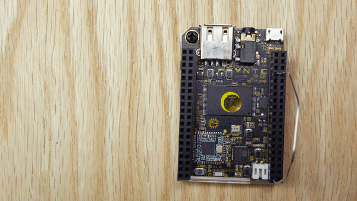
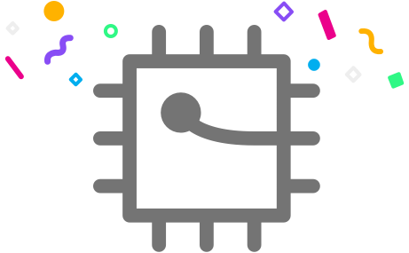

Welcome to the C.H.I.P. Flasher
Flashing copies a new operating system onto your C.H.I.P. It destroys all your C.H.I.P.'s content; it will reset it back to factory settings. Please report any issues here.
Flashing copies a new operating system onto your C.H.I.P. It destroys all your C.H.I.P.'s content; it will reset it back to factory settings. Please report any issues here.
In order to flash, you will need to configure your linux host according to these instructions.
There are some times where using USB3 ports will cause the flashing to fail. If you can, try using a USB2 port, not a USB3. Recent Macs have only USB3 ports. If you find yourself with a modern Mac, try using a USB2 hub in your USB3 port and plug C.H.I.P. into that.
Using a jumper wire, or even a paperclip, wire the FEL pin to the ground pin. This sets C.H.I.P. into FEL mode, which is necessary for installing an OS.

Connect C.H.I.P. to your computer with a USB cable.
You're ready to flash your ! Please do not close this window until the flashing is finished.
Estimated Time Remaining: ???
Flashing State: Waiting
Flashing Stage: Waiting
The flashing process completed successfully. Be sure to let us know what can be improved.

The flashing process has failed. Please exit and try again.